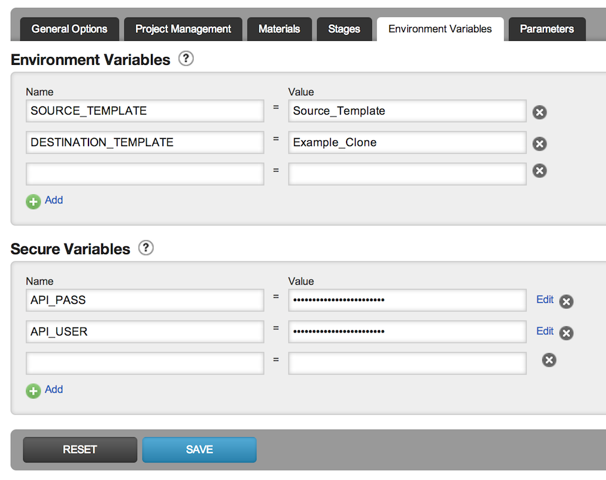
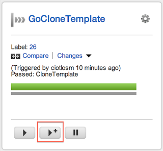

When using GO for Continuous Delivery with multiple teams where you have various security groups, you usually end up with multiple template types. Depending on your application ecosystem you might have different deployment methods depending on the application type, that have some overlapping. At the moment we don't have the ability to have Stage templates, so you need a completely new template when you have differences.
We have decided to have one deployment template separate per application / security group (Pipeline group) so we distribute maintenance, but also reduce the risk of breaking Pipelines of other teams when we change a base template. Having different templates also allows us to allocate Template Admins specific for the application / team / security group that now can manage most of the needs of a team without requiring GoCD System Admin rights.
As you don't want team to get Admin access across multiple applications but you still want them to have something to start with (a base template), we have created two Basic templates that cover basic needs for an application deployment that we "Clone" for each team. After cloning we assign an Admin from their team so they can start modifying it according to their own flavour. Cloning templates is not available in GO at the moment, so we had to find a way around it. One contributor created a script that interacts with GO's own Configuration API to allow template cloning.
How to setup cloning in your GO server instance
- Make sure you have access to https://github.com/oanastoia/go-config-management.git, otherwise you will need to clone this repository inside your infrastructure
- Create a Pipeline in your GoCD server instance
- Use the "Trigger with options" button to do the magic!
Step by step setup
In this section I will try to cover with screenshots the steps you need to achieve the easiest to use setup
Create a new template group
Create a new template group for your "Administrative" tasks that you give permissions only to the persons you want to use the cloning. This will be useful if you decide to have more "configuration" type of pipelines. In our organisation we have a "tooling" repository we use to wrap complex scripts to use in our tasks. I will not go into detail on how to achieve this, but you can read more on how to specify permissions for pipeline groups.
Create a new pipeline within this group
- You will need to create new pipeline within this group.
- You will need to use Git as Material Type and under the URL, use the location of the cloning script (https://github.com/oanastoia/go-config-management.git if you have access to it, or the location where you cloned it). Use "Check Connection" to test it out.
- You will need to add two Environment Variables: SOURCE_TEMPLATE and DESTINATION_TEMPLATE that have some default values
- You will need to add two Secure Environment Variables: API_USER and API_PASS that contain credentials for a user that has correct permissions to use the Configuration API

Alternative you can use the Config XML to inject your template in the group using the code below (do not forget to replace the environment variables with the right values)
<pipeline name="GoCloneTemplate">
<environmentvariables>
<variable name="SOURCE_TEMPLATE">
<value>Source_Template</value>
</variable>
<variable name="DESTINATION_TEMPLATE">
<value>Example_Clone</value>
</variable>
</environmentvariables>
<materials>
<git url="https://github.com/oanastoia/go-config-management.git" />
</materials>
<stage name="CloneTemplate">
<approval type="manual" />
<jobs>
<job name="clone_template">
<tasks>
<exec command="ruby">
<arg>TemplateClone.rb</arg>
<arg>clone</arg>
<runif status="passed" />
</exec>
</tasks>
</job>
</jobs>
</stage>
</pipeline>
After adding the code, please add the API_USER and API_PASS Secure Environment Variables to reflect the correct user and password as seen in the above screenshot.
Trigger the pipeline with options
Now you can just trigger your pipeline with options and go to the Environment Variables tab to put in the right details for cloning.


Enjoy!